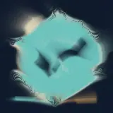
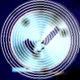
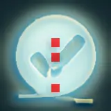

Built-in feedback
butterchurn · complete
a clock with a blue circle on it
EvidenceMeasured visual effects with PrismMoves/PixelCue. Captions, tags and prompt matches are model interpretations, not verified descriptions.
butterchurn · complete
a clock with a blue circle on it
Evidence
butterchurn · complete
a blue heart with a black background
Evidencebutterchurn · complete
a flower with a black and blue background
Evidence
butterchurn · complete
a circular object with a light shining in the middle
Evidence
butterchurn · complete
a white light with a red cross in the middle
Evidence